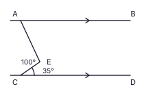
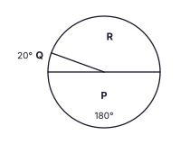
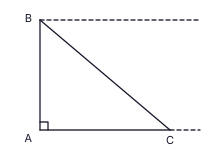
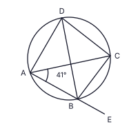
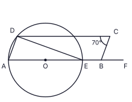

Part A
Answer all questions on this paper itself. Take π = 22/7 where needed. (2 marks each, 50 marks)
A crew of 12 workers can repair a section of railway track in 10 days. How many more workers, working at the same rate, are needed to complete the repair in 6 days?
In the figure, AB ∥ CD, ∠AEC = 100° and ∠ECD = 35°. Find the magnitude of ∠BAE.

Simplify: 52x + 73x − 14x
Which one of the following quadrilaterals can NOT be a face of a right prism whose base is a triangle? Write its number.
(i) a square (ii) a rhombus that is not a square (iii) a rectangle
The pie chart shows the quantities of three kinds of fish caught in a fishing village in one day: P – tuna, Q – seer fish, R – prawns. The quantity of seer fish is 30 kg. Find the quantity of prawns, in kg.

In the figure, O is the centre of the circle and C is the midpoint of the chord AB. DOC is a straight line and ∠AEB = 124°. Find the magnitude of ∠CDB.

Factorise: 5x2 − 45
Given that 100.8451 = 7, write down the value of lg 70.
AB is a vertical lighthouse (A at the foot, B at the top) and a boat is at C, at the same horizontal level as A. In the figure, mark the angle of depression of C from B as a, and the angle of elevation of B from C as b. Write the relationship between a and b.

Chamari bakes a cake in a cylindrical tin whose height is 6 times its radius. Find the ratio of the area of paper needed to wrap the curved surface of the tin to the area of the paper needed to cover its base. (Curved surface area of a cylinder of radius r and height h is 2πrh.)
Two fair tetrahedral dice have their faces numbered 2, 3, 5 and 8. They are thrown together and the numbers on the bottom faces are added. Find the probability that the sum is 10.
In the figure A, B and C lie on a straight line. AB = BD = DC and ∠BAD = 40°. Find the value of x.

Let ξ = {x : x is a positive integer, x ≤ 10}, A = {prime numbers in ξ} and B = {odd numbers in ξ}. Write the number of the correct statement.
(i) A ∪ B = {1, 3, 5, 7} (ii) A ∩ B = {3, 5, 7} (iii) n(A ∪ B) = 7
Simplify: (6x3y2 × 4xy3) ÷ 8x2y
The second term of a geometric progression is −6 and its third term is −18. Find the fifth term.
In the figure, ABCD is a cyclic quadrilateral and BD bisects ∠ADC. AB is produced to E and ∠BAC = 41°. Find the magnitude of ∠CBE.

Find the highest common factor of 16x2y, 24xy2 and 40x2y3.
A bakery uses a triangular prism-shaped bread tin whose base has an area of 3850 cm² and whose height is 12 cm. A cylindrical tin of the same height holds the same volume. Find the radius r of the cylindrical tin. (Take π = 22/7; volume of a cylinder = πr²h.)
In the triangle ABC in the figure, D and E are the midpoints of AB and AC respectively, ∠ADE = 90°, AD = 3 cm and DE = 4 cm. Find the perimeter of the trapezium BCED.

Find the equation of the straight line passing through the points (2, 5) and (4, 11).
In the figure, O is the centre of the circle through A, D and E. ABCD is a parallelogram and A, O, E, B, F lie on a straight line. ∠BCD = 70°. Find the magnitude of ∠DEF.

Rashmi invested a sum of money for 2 years at an annual compound interest rate of 5%. The interest she earned in the second year was Rs. 2100 and the total amount she had at the end of the 2 years was Rs. 44 100. Find the sum she invested.
In the figure, C is the centre of the circle, AC ∥ BD and ∠BCD = 40°. Find the magnitude of ∠AEB.

Solve the inequality 4x + 23 > 2 and write the negative integer values of x that satisfy it.
A circle touches the straight line AB at B and also touches the straight line AC. Some construction lines have been drawn in the figure. Complete the construction using them, and mark the centre O of the circle.